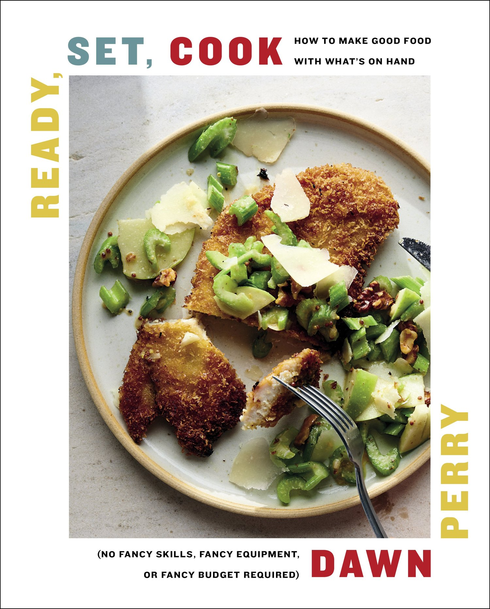
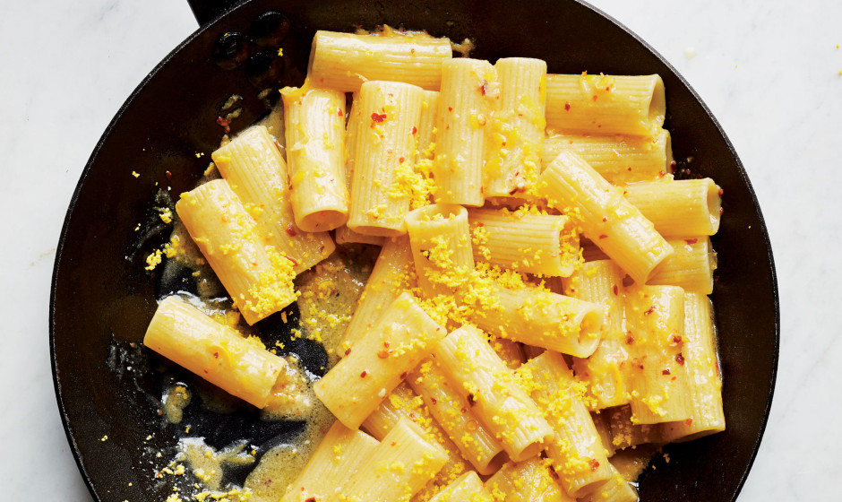
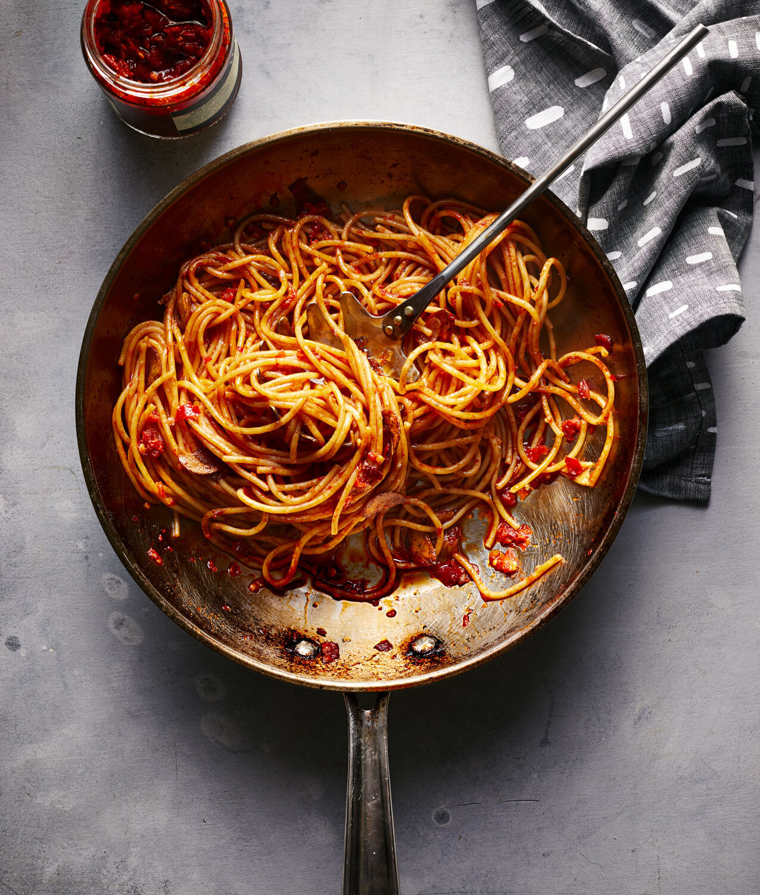
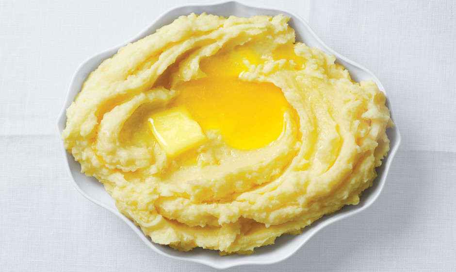
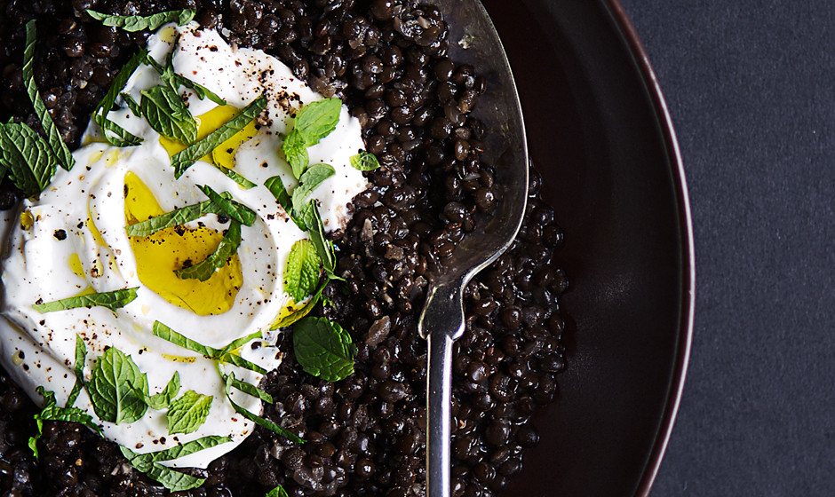
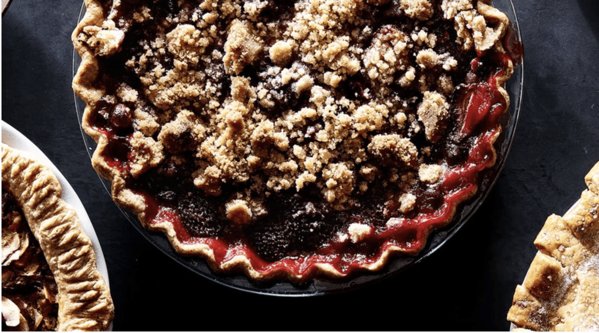
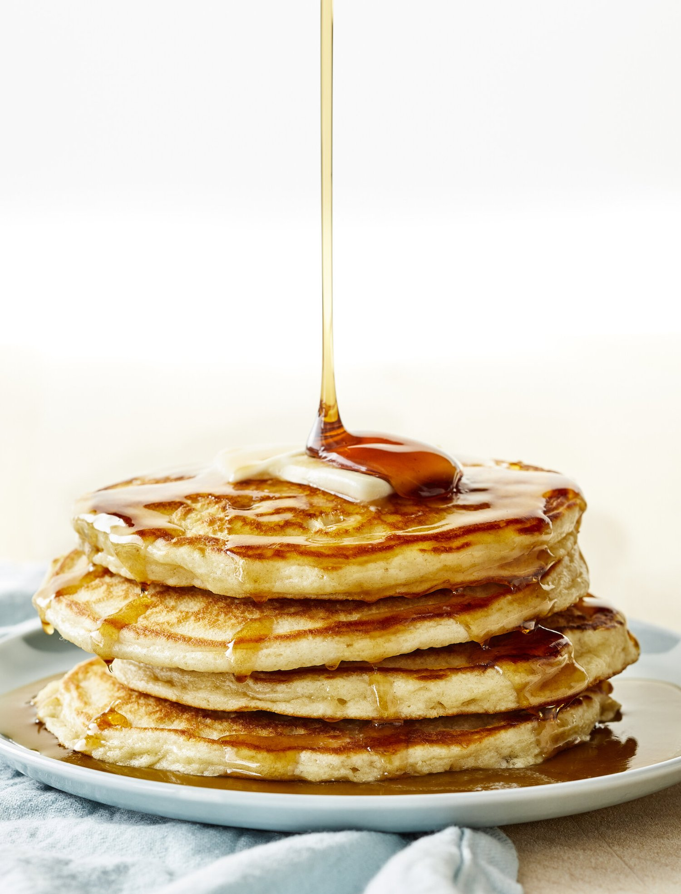
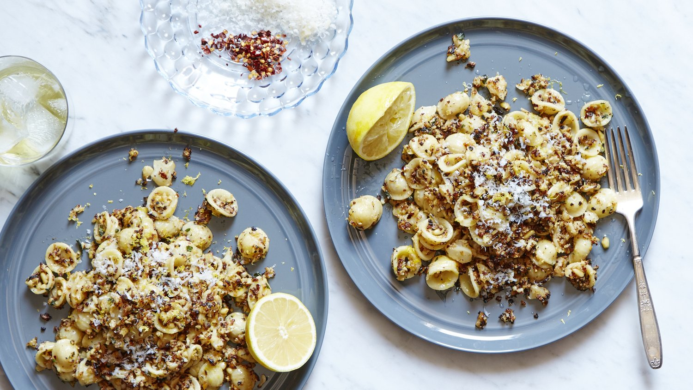

Dawn K. Perry
Writer, editor, and recipe developer. Author of Ready, Set, Cook.
Previously food director at Real Simple and senior food editor at Bon Appétit. More than a decade of translating the ideas of brands and individuals into impactful stories.
Book

Ready, Set, Cook
Simon & Schuster
A guide to quick, flexible meals built on what's already in the pantry, from scallion corn cakes to miso ramen, drawing on Dawn's years in the kitchens of Bon Appétit and Real Simple.
“Perry's tutelage is a culinary windfall that will pay big dividends for busy home cooks.”
Publishers Weekly
Writing
- A food writer on pandemic cooking boredomThe Washington Post
- Quick pasta recipesThe New York Times
- Cooking with frozen fruitThe New York Times
- Modern chicken breast recipesThe New York Times
- How to make big-batch freezer meatballsFood & Wine
- 6 calming reminders if cooking is stressing you outElemental
- Cooking while wearing a babyOXO
- 3 martinis for people scared of martinisBon Appétit
- Cook Like a Pro: the martiniBon Appétit (PDF)
- Navigator: HawaiiBon Appétit (PDF)
Recipes

















About
 Photo by Linda Pugliese
Photo by Linda Pugliese
Dawn K. Perry is a writer, editor, and the author of Ready, Set, Cook (Simon & Schuster). Most recently she was food director at Real Simple.
She started out in the pastry and savory kitchens at Quince and worked as a private chef before becoming associate food editor at Everyday Food. She went on to the Real Simple test kitchen, where a cake feature she wrote was nominated for an IACP award. At Bon Appétit she was senior food editor and then the magazine's first digital food editor, working on the IBM Chef Watson partnership and the James Beard Award-winning Cook Like a Pro package. She was also culinary content editor at Marley Spoon, where she was employee number nine.
Her work has appeared in Epicurious, Tasting Table, Food & Wine, Southern Living, and Country Living, and she wrote the Cucumbers volume of Short Stack Editions. A few favorites: pumpkin muffins for Real Simple, banana bread for Bon Appétit, egg curry for Epicurious, and Communal Table for Food & Wine.
Contact
For writing, editing, and recipe development:
dawnkperry@gmail.comOr find her on Instagram at @dawnkperry.